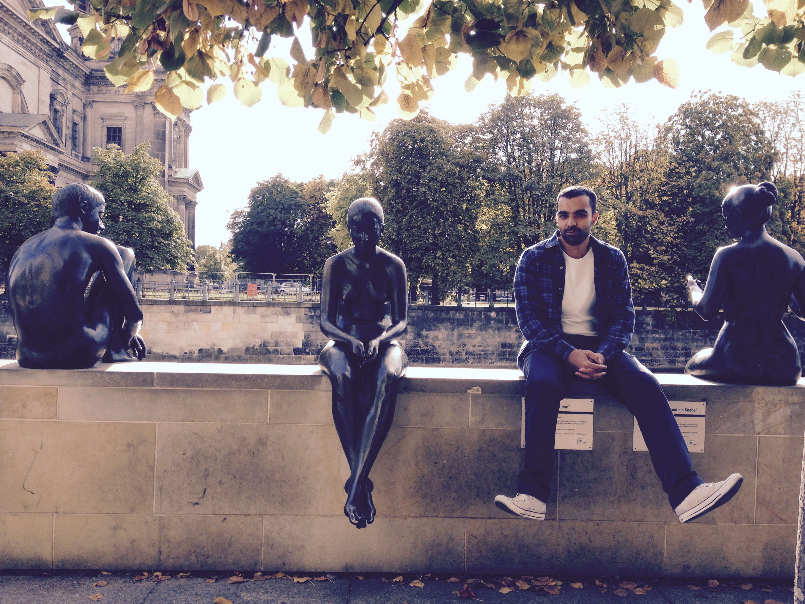
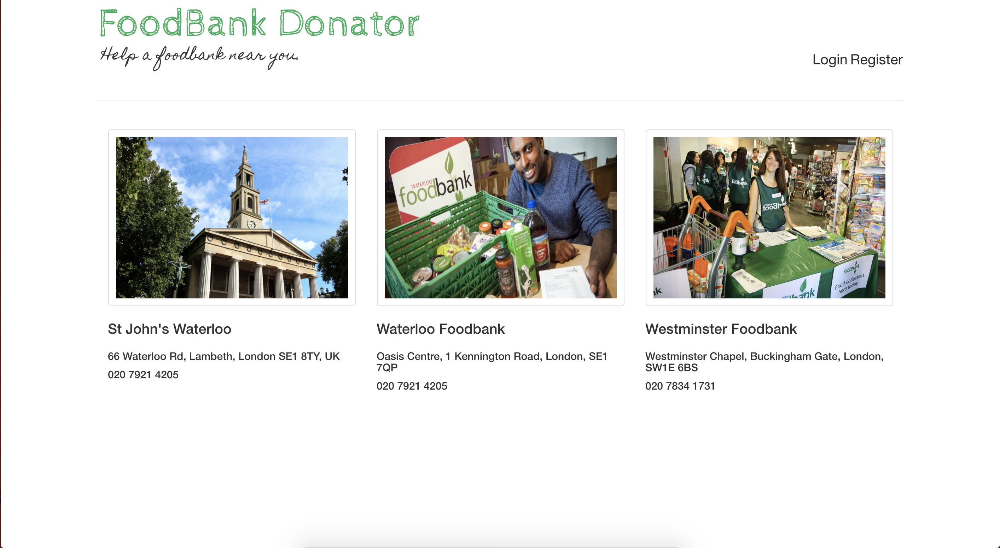
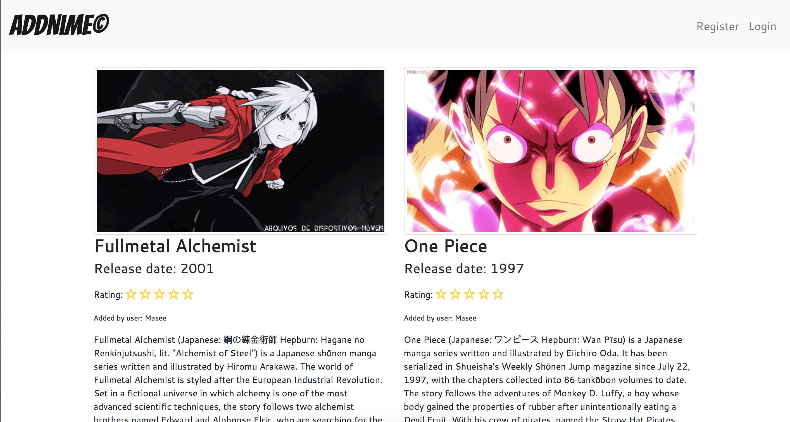
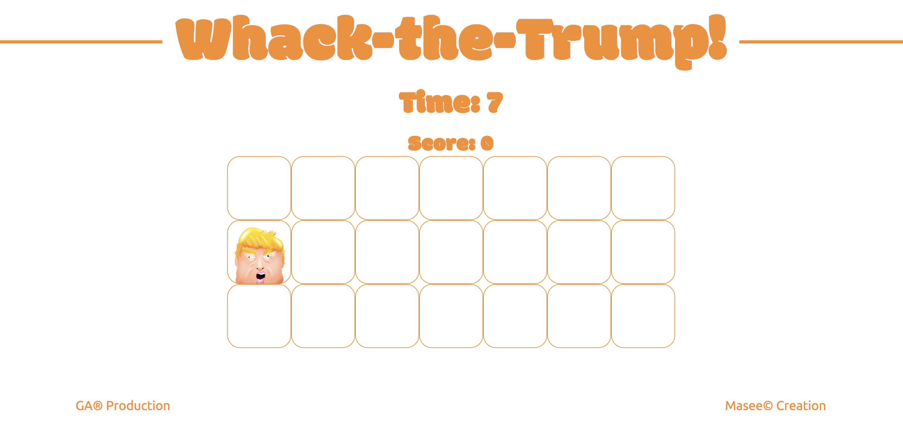
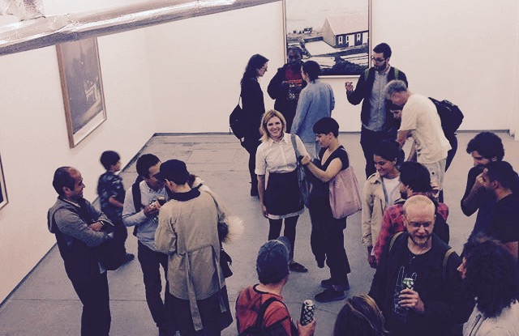

Intro

I have worked in the retail and sales industry for the past decade and I have loved every moment of it as it has made me the person I am today; very driven. The last year I have studied coding in my own personal time. The challenge of problem solving and creating something with code has made me love and appreciate how websites and games are formed. It brought me to the decision of doing an intense web development course with General Assembly. My dream role would be to work as a full stack developer in a friendly, supportive and innovative company where I can develop my career as a programmer.
Project 4
FoodBank Donator
December 2017

Given the chance to choose a language and framework for this project, I decided that I wanted to use Node.js as my back end and React as my front end. Through the week of learning React I came to appreciate how it can be used to organise your front end frameworks, and wanted to implement it into my final project so that I could further develop my understanding of this code.
I chose to make an app for food banks, which when accessed pinpoints the closest food banks in relation to the users current location. I designed this app so that it can also be used by the food banks themselves to communicate what supplies they are running low on. With this, it provides the information needed for the user to donate more specifically to the cause.
Project 3
Watson
November 2017

This was an exciting exercise which allowed me to put into practice what I had learnt so far, as part of a group. Collaborating with three other classmates we created a playful/interactive app; accessing IBM’s Watson API to create an audio version of any submitted text joke. We divided the group in two with one group in charge of creating the back end and the other implementing the front end (which I was part of). I was also, solely responsible for adding a feature to allow the user to login through facebook; giving me a great opportunity to use oAuth. This was one of the most challenging but rewarding projects; working and learning together whilst discovering the individual strengths of each classmate to realise the final outcome.
Project 2
Addnime
October 2017

Building on from the last project, I made a RESTful website based around my long-standing love of Japanese anime. This is the the first time I got a chance to create a CRUD website which allows you to register, login and comment on a post. It was a brilliant learning curve which left me with a clearer and fuller understanding of how the back end and front end interact with one another.
Project 1
Whack-the-Trump
September 2017

I chose to make a whack a mole game as a fun way of putting into practice the logical way of building and making a game. Using HTML, CSS and JavaScript together for the first time I found myself learning quickly with languages that were new to me, whilst re-discovering my enjoyment of problem solving. I was very happy with the final outcome and felt a sense of achievement.
About

With a keen interest in Art; from Salvador Dalí and the Surrealists to emerging, contemporary artists such as Kadie Salmon. I often attend art openings in galleries in London and also enjoy visiting exhibitions at bigger institutions and museums such as the Tate and the Serpentine Gallery. I have a background in film studies and still love to get to the cinema as often as I can. Another one of my biggest and long standing passions is playing football on a Sunday whenever possible.
Since I was child I loved playing and watching football; this hasn't changed! Whenever I get the chance I like to play football with a group of friends where we book a 5-a-side pitch in Wembley for a few hours on the weekend. It's a fun way of keeping fit and active outdoors, and also a great opportunity for me to meet up with my friends. I am also an avid fanatic of Japanese anime and manga comics especially a manga called One Piece, it has been going since 1997 and I am still watching and reading it to this day!
Contact